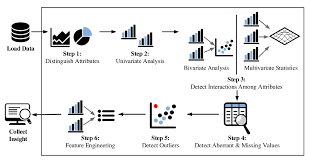
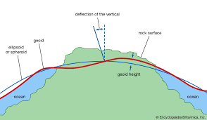
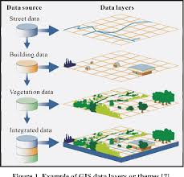

Data Cleaning
with SQL
This data cleaning project involves removal of duplicates, standardizing the data, converting text to date, removing null and blank values, and removing unwanted columns.
Geospatial data scientist helping you become better with data. @tolutaiwo
This data cleaning project involves removal of duplicates, standardizing the data, converting text to date, removing null and blank values, and removing unwanted columns.

This data exploratory project explores the data to discover Companies that laid off 100%, Industries hit the most affected, Countries most affected, Year occurred, Stage of the companies, Percentages laid off, Rolling total or Cummulative, Total laid off per year, Total laid off per year, Partition by year in order to see companies that laid off most per year, Ranking as second CTE.

This Tableau project analyzes sales data over a period of 2020 to 2023, exploring present year's total sales, total profit and total quantiy relative to previous year's data. The project also analyzes total sales per customer, total customer orders, customer distribution by number of orders, and top ten customers based on sales and profit.

This study models geoid surface in Lagos State Nigeria with polynomial models and artificial neural networks, and compare their accuracies.

A prototype system named Land Information System and Services (LISAS) is developed with QGIS®, Leaflet®, and web development tools with data collected from the Office of State Surveyor General (OSSG) of Lagos State. It is a Web-based system with interactive mapping functionalities to support owners’ requirement for accessibility and ease of use. The prototype is tested for various users’ requirements. LISAS is proposed as an efficient, technology-based, customer-oriented and scalable land administration system in Lagos State OSSG.

This study aims to implement Digital Twins to simulate various operating conditions, analyze performance, and predict potential failures of HVAC as it responds to increase in indoor temperature as a result of increase in land surface temperature. We used Python codes to simulate a Digital Twins of the HVAC in Nigerian Institution of Surveyors (NIS) building, and study the impact of temperature rise on energy use in the building.

This study aims to provide decision-makers with a tool to evaluate volume of water needed by urban poor households for planning water supply to places where there is no water distribution network.